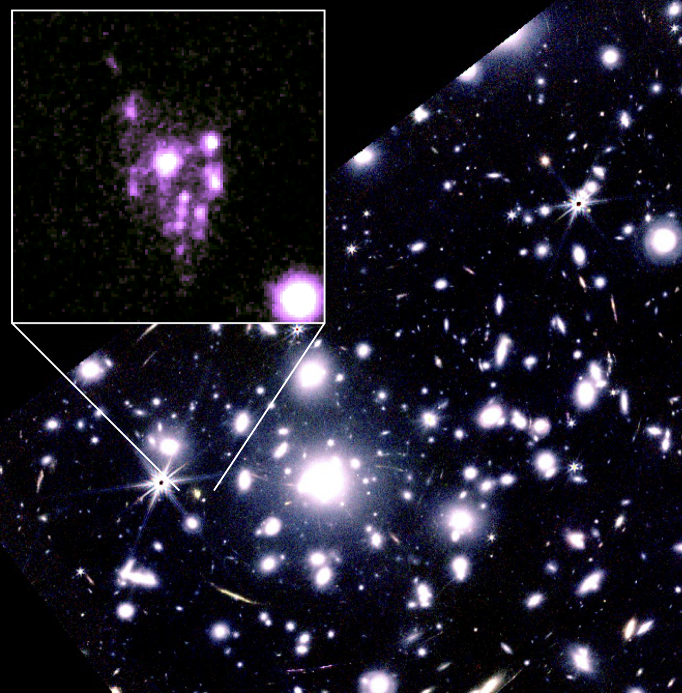

The Cosmic Grapes is a uniquely powerful system, discovered as the brightest, highly and multiply lensed sub-L* galaxy at z=6.07. Owing to an extraordinary gravitational lensing configuration, this galaxy appears with five spectroscopically confirmed multiple images, including a spectacular 6-arcsecond-long arc. Recent JWST and ALMA observations have revealed a wealth of spatial detail: the galaxy is resolved into numerous star-forming clumps as small as 10–60 pc, still embedded in a smooth rotating gas disk, which are challenging to the current galaxy formation and evolution models. The Cosmic Grapes offers an unprecedented opportunity to probe physical processes in the early universe at scales and depths otherwise inaccessible .
Currently, over 200 hours of JWST, ALMA, and MUSE observations are ongoing, making the Cosmic Grapes the subject of the deepest and most comprehensive multi-wavelength follow-up ever performed on an individual galaxy at z>6. This intensive follow-up campaign is opening an entirely new window on the early universe, and is set to dramatically advance our understanding of galaxy evolution in the first billion years of the universe.
These observations will spatially resolve, down to ~10 parsec scales, the chemical enrichment patterns, the mass distributions of stellar, dust, gas, and dark matter, and the internal dynamics of the galaxy. The Cosmic Grapes will allow us to dissect the baryon cycle, feedback, and assembly of a typical low-mass galaxy in the epoch of reionization with a level of detail previously possible only for nearby galaxies.
Selected papers (JWST PIDs 1567 & 4573, ALMA programs 2021.1.00055.S, 2021.1.00181.S, 2021.1.00247.S, 2022.1.00195.S).